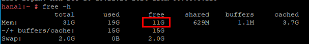

备份/恢复任务失败，查看“SAP HANA安装目录/trace”目录下有任务时间点的oom日志文件，如果存在该日志文件表示内存发生溢出。
日志文件名参考如下：
preprocessor_hana1.30002.rtedump.20240117-021229.018590.oom.trc
备份/恢复时，由于生产环境发生内存溢出，操作失败。
确保安装hana生产环境后，生产环境剩余内存大于10GB。
生产环境剩余内存查看方式如下：
free -h
其回显如下所示，生产环境剩余内存为11G。
